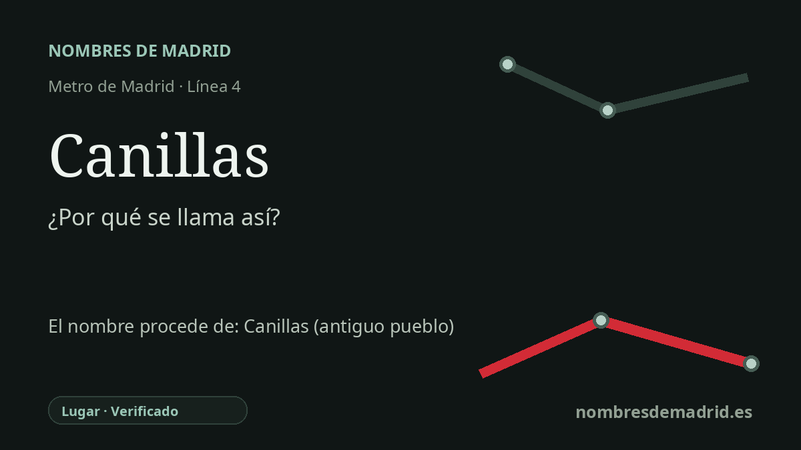

Publicado el · Investigación de Nombres de Madrid · Cómo verificamos cada origen · 7 fuentes consultadas
Respuesta rápida
La estación de Canillas toma su nombre del barrio de Canillas, heredero de una aldea medieval y antiguo municipio incorporado a Madrid en 1950. El origen local del nombre está bien documentado, aunque la etimología lingüística de "Canillas" sigue abierta a interpretación.
La historia del nombre
La estación de Canillas toma su nombre del barrio de Canillas, en el distrito de Hortaleza. La relación es especialmente directa: Memoria de Madrid, a partir de material del archivo fotográfico de Metro de Madrid, indica que la estación abrió el 27 de abril de 1998 y que "recibe su nombre" del barrio en el que se sitúa. En términos de transporte, el nombre llegó con la prolongación de la línea 4 desde Esperanza hasta Mar de Cristal, que incorporó las estaciones de Canillas y Mar de Cristal a esta zona del nordeste de Madrid.
Detrás del barrio actual está el antiguo pueblo y municipio de Canillas. La ficha patrimonial de la Comunidad de Madrid sobre la Ermita de San Blas sitúa Canillas entre los núcleos surgidos alrededor de Madrid tras la conquista de Toledo por Alfonso VI en 1085 y la repoblación de los siglos XII y XIII. La referencia documental más antigua que cita para la aldea de Canillas es una escritura de compraventa de terrenos fechada en 1252. Su núcleo primitivo se encontraba en torno a la actual Ermita de San Blas, antigua iglesia parroquial de San Juan Bautista.
La imagen del siglo XVI es la de un asentamiento agrario pequeño y pobre. La documentación oficial de patrimonio señala que las Relaciones de Felipe II contaban 50 vecinos, unos 200 habitantes, y describían una economía basada sobre todo en la agricultura, algo de ganadería, la elaboración de pan para vecinos de Madrid y el lavado de ropa. En el siglo XVII Canillas sufrió una fuerte despoblación y después pasó a ser señorío: en 1680 Baltasar de Molinet Jijón compró su jurisdicción, señorío y vasallaje, y en 1689 Carlos II le concedió el título de conde de Canillas.
Canillas llegó a la época contemporánea como municipio independiente en el borde de Madrid. El Archivo de Villa conserva documentación municipal de Canillas entre 1857 y 1950 y recuerda que formó parte de la jurisdicción de la Villa y Tierra de Madrid durante el Antiguo Régimen. En el momento de la anexión ya no era sólo una pequeña villa: las fuentes municipales registran 20.412 habitantes repartidos entre la villa y barriadas como La Concepción, Ciudad Lineal, San Pascual y Ventas.
La anexión requiere dos fechas. El decreto del Ministerio de la Gobernación que aprobó la incorporación de Canillas a Madrid está fechado el 17 de agosto de 1949, pero la adhesión se formalizó el 30 de marzo de 1950. Por eso, el nombre de la estación, asignado al abrir la parada de Metro en 1998, conserva un topónimo medieval a través del barrio administrativo moderno. Lo verificado es que la estación se nombra por el barrio y el antiguo municipio; lo menos seguro es el origen lingüístico último de la palabra Canillas, que exige confirmación toponímica especializada.